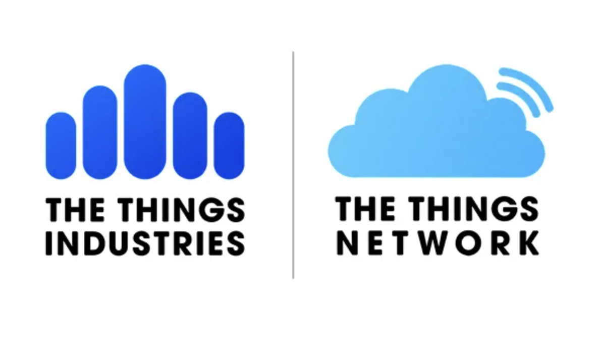
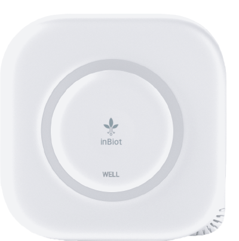
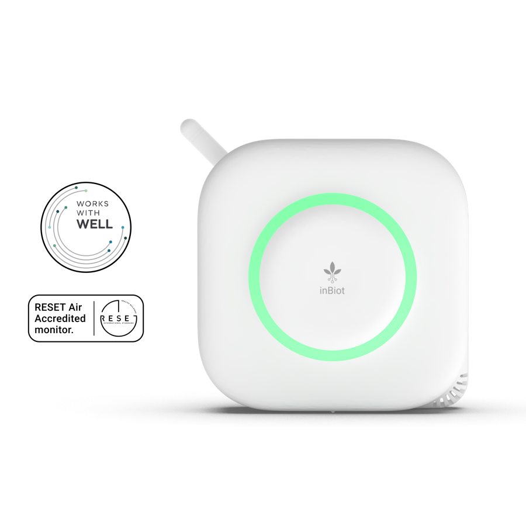

The Things Industries es un proveedor líder de infraestructura LoRaWAN para conectividad IoT. Facilita el envío escalable de los datos de calidad del aire del MICA hacia cualquier plataforma cloud.

Aquí el LoRa es solo el primer tramo del recorrido: el MICA envía sus datos hasta el servidor de red de The Things Network y, desde ahí, quedan listos para conectarse (mediante webhooks u otros métodos) con prácticamente cualquier plataforma de terceros que se quiera usar después. TTN es la infraestructura de red LoRaWAN más extendida y reconocida del mundo, sostenida por una comunidad abierta presente en miles de proyectos de desarrollo IoT.
The Things Industries
The Things Industries (fundada en 2015, Países Bajos) es un proveedor de la plataforma The Things Stack, un servidor de red LoRaWAN escalable para la conectividad IoT de bajo consumo y largo alcance. Cuenta con más de 50.000 gateways y 1,5 millones de dispositivos conectados a través de más de 500 clientes empresariales.

CompatibilidadinBiot en el Device Repository de TTN

MarketplaceMICA en el Marketplace de LoRa Alliance
Artículo sobre la integración
Publicación en LinkedIn